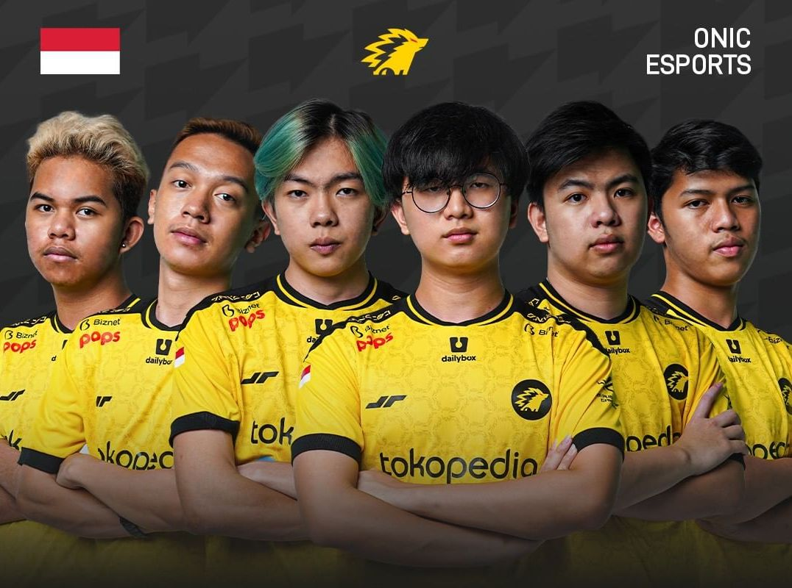

ONIC Esports Jadi Juara MPL Indonesia Season 10!

Grand Final MPL Indonesia Season 10 kembali menyajikan Royal Derby antara RRQ Hoshi melawan ONIC Esports. Kedua tim pastinya setiap pertemuan akan menampilkan permainan agresif penuh tensi pada Royal Derby ini. Terlebih lagi, kali ini Royal Derby kembali tersaji di Grand Final MPL Indonesia tiga kali secara beruntun. ONIC Esports langsung bermain agresif pada game yang pertama. Mereka berhasil mendominasi jalannya pertandingan yang ada pada game pertama ini. Skylar yang menggunakan Wanwan tidak dibiarkan farming dengan baik dan Ia gagal membawa RRQ Hoshi hingga late game. ONIC Esports sendiri akhirnya berhasil melakukan end game pada menit ke 13 dengan skor 11-3. Skor sementara 1-0. Game yang kedua bisa dikatakan sepenuhnya milik RRQ Hoshi. Draft pick yang mereka miliki mampu menghancurkan draft pick yang dimiliki oleh ONIC Esports. RRQ Hoshi berhasil mendominasi jalannya pertandingan game yang kedua hingga mereka berhasil menutup kemenangan atas ONIC Esports. Skor sementara 1-1. Game ketiga Grand Final ini lagi dan lagi berhasil diambil dan dikuasai oleh ONIC Esports. ONIC Esports sendiri secara mengejutkan melakukan pick Miya pada last pick. Kombinasi draft pick yang dimiliki ONIC Esports pada game ini benar-benar menjadi counter pick RRQ Hoshi di game ini. Buktinya, RRQ Hoshi harus babak belur pada game yang ketiga ini dan membuat mereka harus kehilangan kemenangan di game yang ketiga. Skor 2-1.

Perjuangan ONIC Esports pada game keempat ini bisa dikatakan hanya selangkah lagi menuju gelar Raja Galaxy Season 10. Mereka kembali berhasil membuat RRQ Hoshi tunduk pada game yang keempat ini. Permainan dari ONIC Esports tidak mampu dibendung oleh RRQ Hoshi dan membuat skor menjadi 3-1. Lesley berhasil menjadi kejutan pada game yang keempat ini. ONIC Esports kembali membuat draft yang bisa dibilang sangat mengejutkan. ONIC Esports pada game keempat ini sendiri lagi dan lagi berhasil mendominasi jalannya early game. Namun, momen berhasil didapatkan RRQ Hoshi untuk membuat mereka unggul pada game yang keempat ini. Namun, ONIC Esports berhasil membuat kemenangan dengan sempurna dengan Maniac dari Lesley dan membuat skor menjadi 4-1.